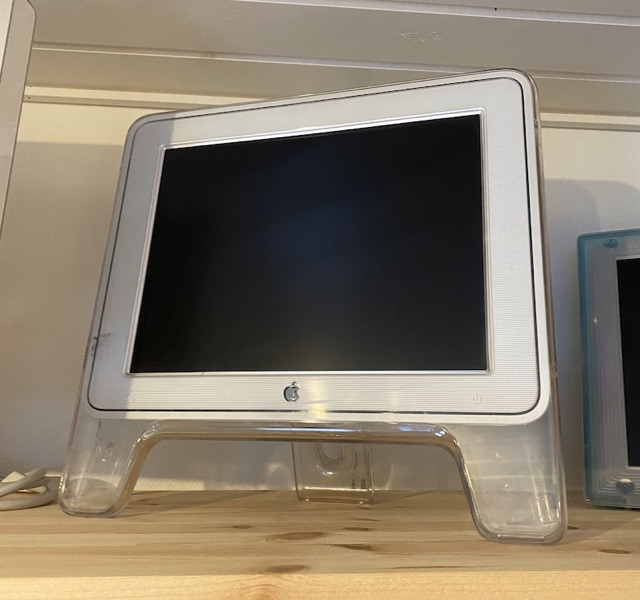

Macseum - Mortens Apple-museum

Studio Display 15" (2000)
Denne skærm blev introduceret sammen med
Power Mac G4 Cube
og de er sammen en meget ikonisk duo.
Læs mere på Wikipedia
Fortsæt turen
Kig til venstre
Kig ned
Kig til højre
Follow @mortengregersen